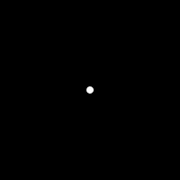
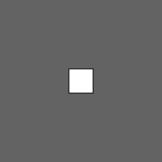
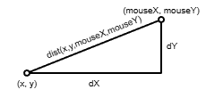

Open the Random Walk workspace in CodeHS. There you will find a circle whose location is defined by the variables x and y. Those variables are both initialized to 100, which represents the center of the canvas.
Run the program and you will see the circle sitting the center of the screen.

With the location of the circle determined using variables, we have the ability to change where it appears. Notice that the mousePressed() function modifies the x and y to be wherever the mouse is:
function mousePressed(){
x = mouseX;
y = mouseY;
}Run the program and click around the canvas. You should see the circle move to the location of the mouse.
Also notice that the old circle doesn't disappear. Moving the background(0) statement to the setup() function means that it will not be constantly redrawing over the old canvas. The circle's location will change, but we will always see circles at the previous locations.
Having a location represented with variables makes it possible to show movement over time. All we have to do is change the location by a small amount each frame. A classic exerciseof this is called a 'Random Walk'. Observe the demo below.
This effect is accomplished by doing two things each time draw() is called:
Modify the end of the draw function to do both of those steps. Generate two small random values, between -2 and +2, and add them the x and y variables. This will cause the 'wandering' motion that you can see. Randomizing the color will require generate a red, green, and blue value to set the fill() to.
Notice that the demo will reset once the circle leaves the canvas. This can be accomplished during draw() as well. Use an if statement that looks at the x and y variable. If either of them is too large or small, respond by:
With these changes your program should be complete. Your circle should wander off of the canvas and reset when necessary.
Open the NSEW workspace, where you will find a similar situation as before. A square's location is represented using global x and y variables, initialized to the center of the canvas.

We previously saw that movement occurs when we make small changes to the location of the object. This time we are going to have a little more predictable movement. Click on the demo below and use W, A, S, and D to contol where the square goes.
The motion here is accomplished by adding a deliberate -1 or +1 to one of the x or y variables.
We've seen before that changing the location during the draw loop will cause movement to change.
For example, if you add x += 1; to the end of draw, it will cause the x to continually increase and the square will drift to the right. You could also say x -= 1; to subtract from x and go to the left
We also have a y variable that will allow us to move up or down. Remember that y = 0 is at the top of the screen, so y -= 1; will cause it to drift up the screen and y += 1; will cause it to go down.
Right now we can use any of the above statements to change the values of x and y and make the square drift, but that only allows the square to go one direction. Pasting all four lines at once will cause it to just sit there because both x and y will be increasing and decreasing every single time. A net gain of zero.
If we want to choose the direction that we want to go, we need variables to represent that choice. In our case, let's keep a global variable that will always hold the value "N", "S", "E", or "W". When we're moving the square we'll choose how to move based on its value. Modify your program to:
Once you have the dir variable declared and initialized, go to the end of the draw function and delete any x += 1; or y -= 1; statements that may still be there. Instead you need to have a four part if statement that first looks at the value of the new dir variable and changes x or y based on that.
For example:
if( dir == "N" ) y -= 1;
This if statement looks at dir to see what direction the dir variable is holding. If dir says "N", we subtract from the y to move up. Modify your draw() function to include itand run the sketch to make sure that the square moves up the screen.
After that, add three more parts to the if statement in your draw function to go "S", "E", and "W". Make sure that you test all four directions by assigning each letter and testing to make sure that the correct direction movement is produced.
Once you confirm thta the dir variable is in charge of your square's direction. Update the keyPressed() function to look like so:
function keyPressed(){
if( key == "d" ){
dir = "E";
}
}
This change will cause the program to respond to pressing the D key with a change to the dir variable. Changing dir should cause the square to change direction.
First check to make this works, then add the other if statements to respond the W, A, and S keys.
Notice in the demo how the box will never leave the window. You can accomplish this during the draw() function with an if statement that detects if the x or y has gone too large or small, then responding by assigning it to be that value
For Example: The canvas has a width of 200. Since the square is 30 x 30, the largest value that x should be is 285 (300 - half the size). We can force this by adding the following if statement:
if( x > 285 ){
x = 285;
}
With this setup, even if the draw function keeps adding to the x variable, this if statement will keep reseting it to this maximum value. Add it to the end of your draw function and make sure that your square can no longer go off the right of the canvas.
If that functions properly, add three more similar ifs to prevent leaving from the left, top, and bottom of the canvas.
Lerping is short for Linear Interpolation, with is used to smoothly transition from one value to another. Click the demo below to see what it looks like.
When lerping, the object moves faster the further away that it is. As it gets closer, it slows down.
Open the Lerping workspace in CodeHS. This time you will find two different locations defined by global variables: (x, y) and (destX, destY). Each location is used to draw a circle on the canvas.
At the moment the only way that we can change the sketch is by clicking the canvas with the mouse. The mousePressed() function changes the location of destX and destY, which will bring that circle to the mouse.
Our goal for this workspace is to make the 'xy' circle move towards the 'destination' circle. Instead of simply teleporting the 'xy' circle to its final location. We will make a small change to x and y during the draw() function, but this time we will calculate so that it moves in the direction of the destination circle.
For our movement, we are going to move (x, y) ten percent closer to (destX, destY) each time draw is called. To do this we need to look at dX and dY:
Notice in the diagram above that the values dX and dY represent the differences from x to destX and y to destY. Since we want to move only a small portion each draw(), we'll only add ten percent of dX and dY to our circle's x and y.

This will provide a smaller step but keep the proportions the same. This will preserve the direction that it needs to go. That way it will always be moving toward its location, but not in one big jump.
Modify the end of the draw function to:
If done properly, you should see one circle seeking out the 'destination' circle and stopping in its center. Clicking around should cause the destination circle to move and the seeking circle to follow.
Wave your mouse over the canvas below and observe how the circle follows the mouse.
This movement is similar to how we created the lerping motion before, by increasing x and y of the circle by values derived from the dx and dy. Maintaining the same ratio of x to y is how the motion goes in the proper direction.
With lerping, always moving 10% closer to the target causes motion that is faster the further away from the target you are. This time we are trying to always move the same amount. To do this, we need to normalize the vector.
If we again calculate dX and dY between the mouse's x and y from the chaser's x and y, dX and dY create a right triangle whose hypotenuse is the distance between the points: dist(x,y,mouseX,mouseY)

If you divide both dX and dY by that distance, you keep the same ratio between the two, but create a triangle with a hypotenuse that is 1.

This is the trick that we are going to use to 'chase' the mouse.
With this complete, run the program. The mouse should steadily move toward the mouse
The pointer is simply a line, drawn from the chaser's location in the direction that it is heading. We can reuse the smaller dX and dY for this purpose:
//In the right direction, length 1
line( x, y, x + dX, y + dY );
But this would only draw a line of length 1. You can fix this by multiplying the dX and dY by a number of your choosing.
//In the right direction, length 12
line( x, y, x + 12*dX, y + 12*dY );
By this point you should have a chaser that will follow the mouse, but when it gets super close to the mouse, the line starts to jitter back and forth unpleasantly. Our next step is to make it act more like the demo, as the chaser arrives at the mouse, the line is no longer drawn to have a length of 12.
The draw function should already be calculating the distance between the mouse and the chaser. Modify it so that it only draws the current, length 12 line, when it is more than 12 pixels from the mouse. Otherwise draw a line from the chaser's location directly to the mouse.
Open the Gravity Workspace. Again we have a circle that is being drawn at a variable location, which is initialized to be the top of the screen.
In the previous assignments we've shown movement by changing the location by some amount each time draw() is called, with either a constant value or one derived from another location on the canvas. This time we are taking a slightly different approach.
There is a ySpeed variable to represent how fast to move in the y direction, and in the draw() function we are simply adding that variable to y (y += ySpeed;). At the mooment ySpeed is simply initialized to 1, which results in a constant
drift similar to what we've seen before.
|
Our goal for this window is to cause a more realistic falling motion for our object. Right now, changing y by a constant value doesn’t quite look right. Gravity is a force that is always pulling on the object, causing it to fall faster and faster the longer it goes. This means that y should be changing by more and more each step. This is why we have a ySpeed variable. In the draw() function, after increasing the y variable, increase the ySpeed variable by a small amount. ySpeed += 0.5;
This should cause the ySpeed to consistently increase, causing the ball to fall by more and more, looking more like falling with gravity until it drops off the screen. |
|
At the moment the ball drops completely off the bottom of the canvas. We want to simulate bouncing when this occurs. Bouncing means to suddenly start moving in the opposite direction. Modify the draw() function so that, if the ball's y is greater than the height of the canvas, you respond by flipping ySpeed from positive to negative (ySpeed *= -1; or ySpeed = -ySpeed; ) With this if statement in place, run the program again. Your ball should now infinitely bounce. |
|
Flipping the ySpeed to its exact opposite is a little too perfect of a bounce. The ball will infinitely keep bouncing. In reality, a little energy is lost with each bounce. Modify your if statement so that it bounces by replacing ySpeed with 90% of its opposite ( ySpeed *= -0.9 ). This causes each bounce to be a little less than the one before it. Run the program and you should see some more realistic bouncing, with each bounce being a little less than the one before. |
Watch it long enough and you'll see a glitch where the ball will get trapped in the ground a little when it's supposed to bounce. This is because the ySpeed is taking the ball past the height of the canvas so far that 90% of it is not enough to get back. The solution is to perform a nudge. As your if statement detects your ball has gone past the height, do two things:
Setting y to be exactly the height of the canvas places it right at the boundary. This is a small change, but guarantees that the smaller bounce will be big enough to get back on the canvas without getting stuck.